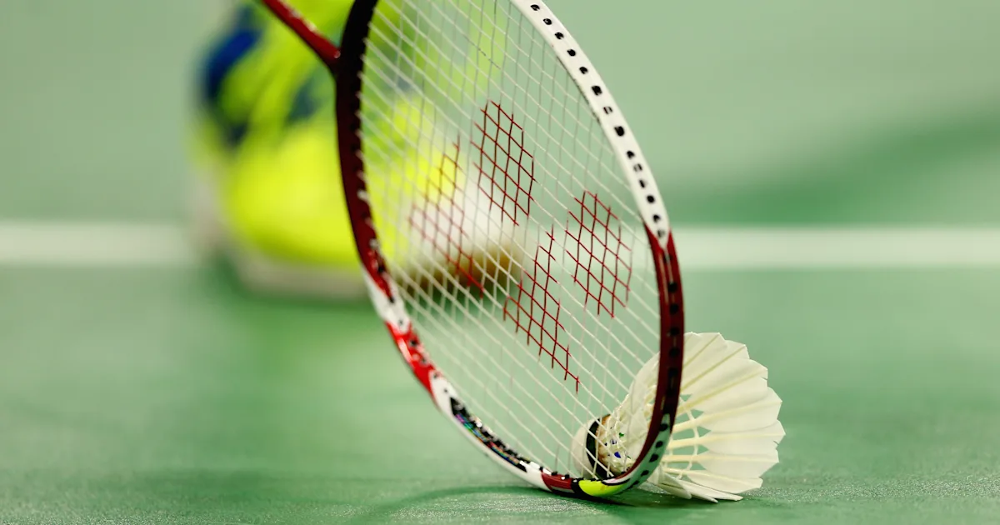

Badminton is a sport and hobby I have enjoyed for many years. I have been playing badminton for around 3-4 years and used to play competitively. Ever since covid, I have dropped badminton as a competitive sport and havebeen playing recreationally.

Learn more about badminton here
I travelled to Alaska on a cruise during my elementary years. I saw many beautiful sights and sceneries, as well as eating many different types of food I haven't tried before.
Find out more about Alaska here
I have been playing chess on and off for a few years. Before, I use to actively indulge in the sport when I was in chess club, however, I play less frequently now. Some of my favourite openers are:
Learn more about chess here